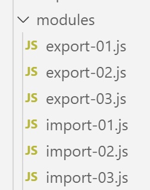

10. De modules ES6

Met de modules ES6 kunt u JavaScript-toepassingen bouwen die zijn gestructureerd in onafhankelijke en herbruikbare modules.
10.1. Scripts [import-01, export-01]
Het script [import-01] maakt gebruik van de module [export-01]. Deze is als volgt gedefinieerd:
// standaard export van een naamloos object
export default {
data: 2,
do() {
console.log(this.data);
}
};
Opmerkingen
- de regels [2-7] definiëren een naamloos object met de eigenschappen [data, do];
- regel 2: de instructie [export default] exporteert dit object. Dit object kan dus worden geïmporteerd;
De module [export-01] wordt door het script [import-01] als volgt gebruikt:
''use strict';
// import van een standaard geëxporteerd object
import export01 from './export-01';
// gebruik van dit object
export01.do();
// een standaardexport kan onder elke gewenste naam worden geïmporteerd
import data from './export-01';
console.log(data.data);
Opmerkingen
- in de regels 3 en 7 wordt het standaard geëxporteerde object van de module [export-01] onder twee verschillende namen geïmporteerd;
- zodra een object is geïmporteerd, kan het worden gebruikt alsof het lokaal in het script was gedefinieerd;
Uitvoering
[Running] C:\myprograms\laragon-lite\bin\nodejs\node-v10\node.exe -r esm "c:\Data\st-2019\dev\es6\javascript\modules\import-01.js"
2
2
10.2. scripts [import-02, export-02]
Deze scripts tonen een export van een benoemd object.
Het script [export-02] ziet er als volgt uit:
// standaardexport van een object met een naam
const data = {
data: 2,
do() {
console.log(this.data);
}
};
// export
export default data;
- regel 9: het object [data] wordt geëxporteerd;
Of het geëxporteerde object nu een naam heeft of niet, maakt voor het importeren geen verschil. Het script [import-02] luidt als volgt:
'use strict';
// een standaard geëxporteerd object importeren
import module1 from './export-02';
// gebruik van dit object
module1.do();
// een standaardexport kan onder elke gewenste naam worden geïmporteerd
import module2 from './export-02';
console.log(module2.data);
Uitvoering
[Running] C:\myprograms\laragon-lite\bin\nodejs\node-v10\node.exe -r esm "c:\Data\st-2019\dev\es6\javascript\modules\import-02.js"
2
2
10.3. scripts [import-03, export-03]
Een module kan meerdere elementen exporteren.
Het script [export-03] luidt als volgt:
// meerdere exporten
// object exporteren
const data = {
data: 2,
do() {
console.log(this.data);
}
};
// exportfunctie
export { data };
function doSomething() {
console.log("doSomething");
}
export { doSomething };
Opmerkingen
- regels 10 en 14: export van twee elementen. De export van een element gebeurt met de syntaxis [export {élément}];
Het script [import-03] gebruikt de module [export-03] op de volgende manier:
'use strict';
// een module importeren [export03]
import {data, doSomething} from './export-03';
// gebruik van imports
data.do();
doSomething();
// andere schrijfwijze
import * as module from './export-03';
// gebruik van de import
console.log(module.data);
module.doSomething();
- regel 3: de [imports]-opdrachten worden uitgevoerd met de exacte namen van de geëxporteerde objecten;
- regel 8: alle geëxporteerde objecten kunnen worden geïmporteerd in een object met de naam (hier [module]);
Uitvoering
[Running] C:\myprograms\laragon-lite\bin\nodejs\node-v10\node.exe -r esm "c:\Data\st-2019\dev\es6\javascript\modules\import-03.js"
2
doSomething
{ data: 2, do: [Function: do] }
doSomething